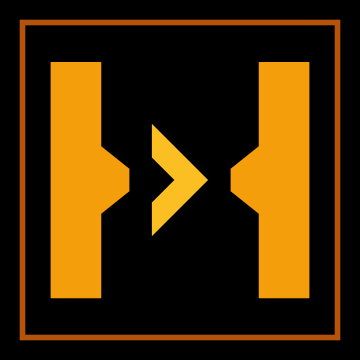
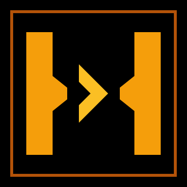

STRAITS
Transit Gate mk2 · winner · shown in real usage contexts
◆ Browser tab (the 16px test)
◆ App header lockup (replaces the text-only title)
◆ Icon set (what actually gets generated)

apple-icon 180

icon-192 (PWA)
The idea: two tapered coastline walls pinch a strait; a brighter-amber vessel chevron
(#fbbf24) drives through the narrows, inside a terminal bezel.
True-black + amber #f59e0b, sharp corners, JetBrains Mono wordmark —
matches the existing Bloomberg aesthetic exactly.